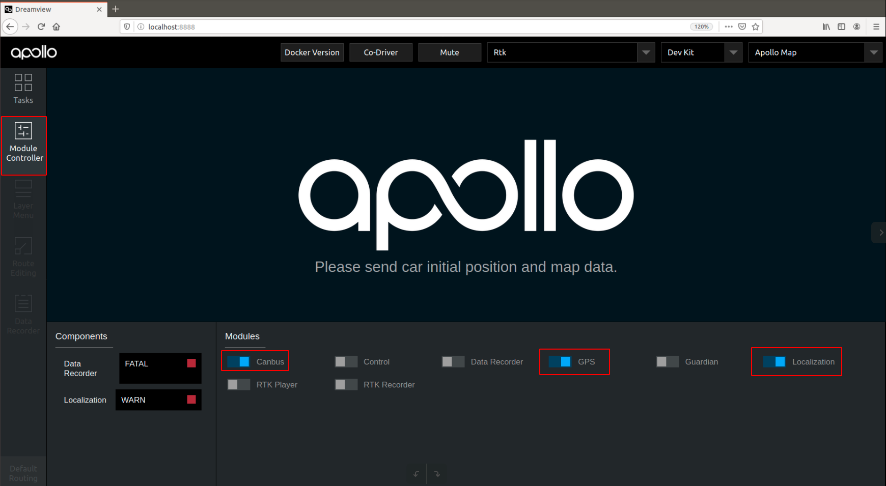
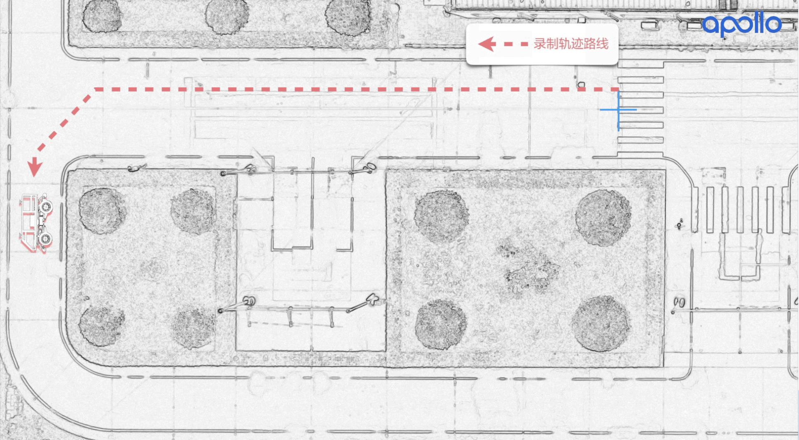
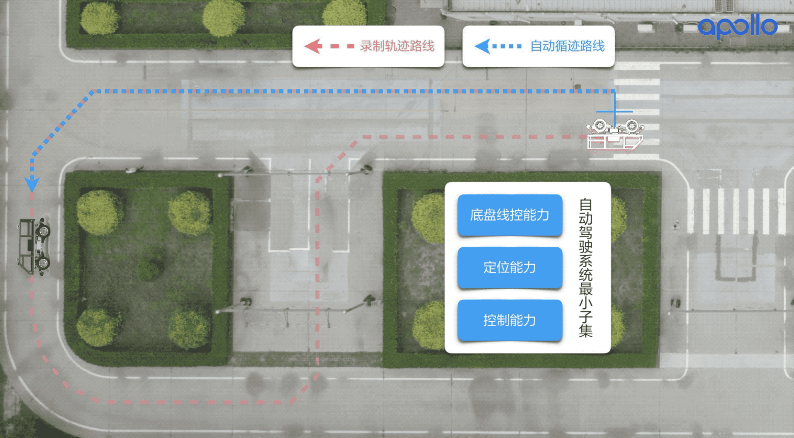
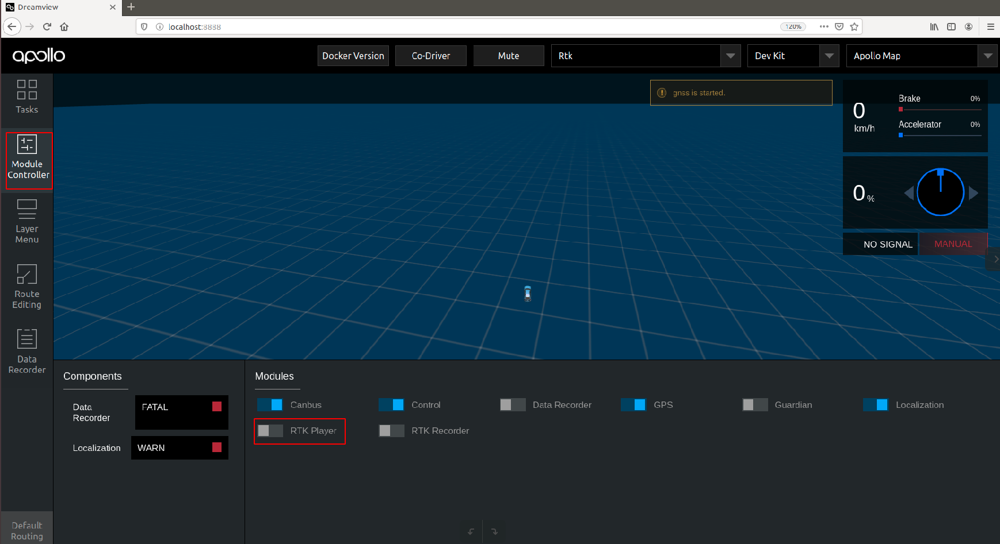
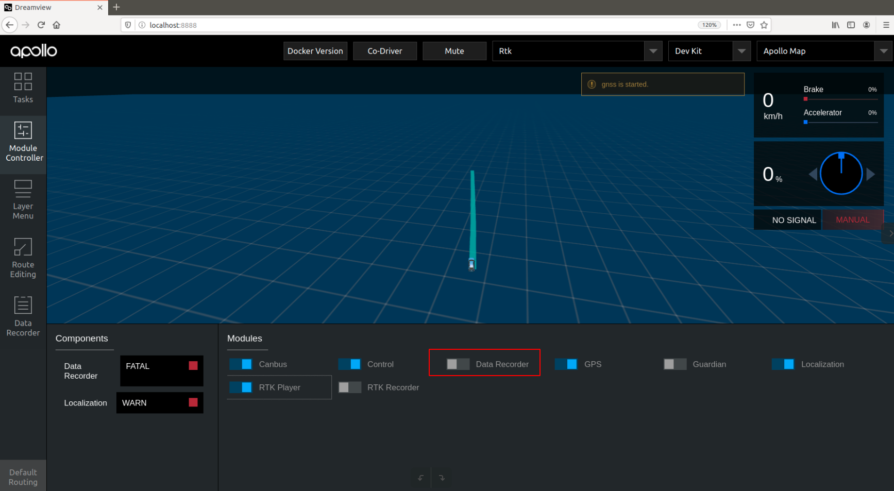
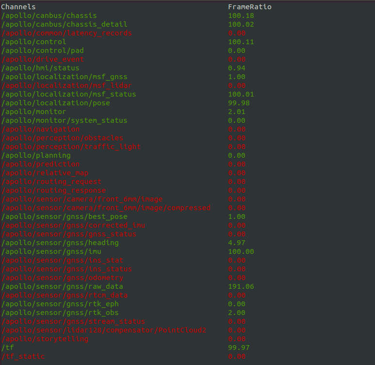
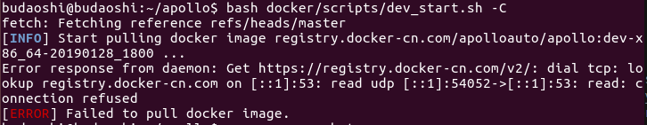

循迹搭建--车辆循迹演示
概览
- 该用户手册旨在帮助用户在开发套件上实现循迹功能。
- 循迹作为自动驾驶的最小闭环子集，在硬件上需要搭建自动驾驶最小系统的集成，在软件上实现相关模块的配置、标定、启动等工作，才能进行循迹的操作演示。在循迹过程中，既考验开发者在前述准备工作的掌握程度，又能够很直观的感受到自动驾驶的使用体验。
前提条件
-
在进行车辆循迹前，需要完成以下前提工作：
- 循迹搭建--Apollo系统安装
- 循迹搭建--定位模块配置
-
确保在开阔场地、车少人少等相对安全的情况下实验。
-
确保至少两人操作，一人操作工控机，一人操作遥控器，做好随时接管准备。
车辆配置文件准备
- 在
/apollo/modules/calibration/data/目录下列出了Apollo支持车型的配置参数。 - 在
/apollo/modules/calibration/data/dev_kit文件夹下，我们为开发套件提供了默认的参数，请务必按照前述前提条件的步骤进行配置，否则会导致循迹启动失败。在完成前提条件准备工作后，下面开始启动循迹操作。
循迹启动
1. 启动can卡
启动工控机后，首先进入CAN卡目录启动CAN驱动，在桌面上打开命令行终端（Terminal），操作如下命令
cd ~/SocketCan/
bash start.sh
正确操作后，会返回如下显示，证明CAN驱动启动成功：

2. 编译项目，启动Dreamview
进入docker环境，用gpu编译项目，启动DreamView
cd /apollo
bash docker/scripts/dev_start.sh
bash docker/scripts/dev_into.sh
bash apollo.sh build_opt_gpu
bash scripts/bootstrap.sh
3. 启动所需模块
在浏览器中打开(http://localhost:8888)，在--setup mode--内，选择模式为Rtk， 在--vehicle--选择车型Dev Kit。

在页面左上角处点击Module Controller页面标签，进入到软件模块启动界面，
点击侧启动Canbus模块、GPS模块、Localization模块：

4. 检查各模块数据是否正确
在docker中输入cyber_monitor命令并检查以下channel（使用上下方向键选择channel，使用右方向键查看channel详细信息）：
| channel_name | 检查项目 |
|---|---|
/apollo/canbus/chassis |
确保能正常输出数据 |
/apollo/canbus/chassis_detail |
确保能正常输出数据 |
/apollo/sensor/gnss/best_pose |
确保能正常输出数据、sol_type: 选项显示为NARROW_INT |
/apollo/localization/pose |
确保能正常输出数据 |
如下图所示

5. 循迹录制
1）在空旷场地内，将车辆遥控至循迹起点，记录此时车辆车头方向和所在位置：
-
将遥控器按钮置于
手动驾驶模式； -
记录此时车辆起点位置；
注: 可以在车辆左前轮处画一个十字符号，记录车辆的起点。

2）启动Rtk_Recorder录制循迹数据：
- 在
Dreamview页面内，在Module Controller，点击RTK Recorder按钮，启动循迹录制，录制循迹数据：

-
这时使用遥控器，遥控车辆前进一段轨迹，到达期望的终点，车辆停止后，在
Dreamview页面点击RTK Recorder按钮，关闭循迹数据录制。 -
注意：请务必在车辆到达终点后快速关闭
RTK Recorder按钮，否则可能会导致记录多余无用数据，或者只打开不关闭RTK Recorder按钮，可能会导致后续循迹回放无法进行！

- 结束录制循迹轨迹后，录制的循迹数据在
apollo/data/log/garage.csv中，文件内包含了车辆的轨迹、速度、加速度、曲率、档位、油门、刹车、转向等信息。
6. 循迹回放
1）将车辆移动至之前循迹录制时标记的起点： - 注意车辆的起点位置和车头朝向都尽量与循迹录制时起点保持一致； - 遥控器放权。

2）启动Rtk_Player进行循迹回放：
- 启动
control模块：在Dreamview页面Module Controller标签页内，点击Control按钮，启动control模块。

- 点击
Rtk Player按钮，启动循迹回放，这时会看到车辆前方出现一条蓝色的轨迹线，这条轨迹线就是刚才循迹录制的那条轨迹线；

-
第一次尝试循迹时，先检查
dreamview是否有清晰无毛刺的蓝色规划轨迹，请确认轨迹是否与期望的大致相符，如果相差很大，比如本来录制的是直行，而蓝色轨迹显示的大幅度转弯，此时要小心测试，谨防危险。 -
这时车辆还不会进入自动驾驶，这一步只是把循迹数据放出来，如果车辆没有前进，则会不断
replan。
3）然后在Dreamview中Task标签内，点击Start Auto，这时候车辆开始启动，可能开始起步比较猛，多注意接管。

4）车辆循迹自动驾驶至终点后，车辆停止，这时使用遥控器首先接管车辆，然后在Dreamview页面Module Controller标签页内，再次点击Rtk Player按钮关闭循迹回放。

注意事项：一定要在宽阔的场地进行测试，确保周围没有人，循迹测试之前做好应急接管准备，有问题随时遥控器接管。不要轻易尝试速度大于4m/s（16km/h）的循迹。
5）记录循迹自动驾驶Record数据包，可以在第（3）步开始钱，在Dreamview页面Module Controller标签页内，点击Data Recorder按钮，录制循迹自动驾驶的Record数据包，车辆循迹结束后，记得再次点击Data Recorder按钮关闭录制（注意：如果只打开不关闭，可能会导致录制的数据包不完整，造成后续使用该数据包失败！），该数据包可以用于后续在实验室查看循迹数据、回放循迹来使用。

- 录制的
Record数据包存储在/apollo/data/bag目录中，每一次的录制数据包会存储在以时间戳命名的文件夹内，（注意：数据包会在apollo/data/bag/文件夹下生成2个年月日时分秒相似的文件夹，分别以年-月-日-时-分-秒和年-月-日-时-分-秒_s命名，开发者可以不用理会_s后缀的文件夹，只需要使用年-月-日-时-分-秒文件夹内录制的标定数据即可）。
7. 再次循迹
如果想再次循迹其它轨迹路径，可以重复步骤5-6，完成不同轨迹的循迹演示。
调试
1. 底盘连接是否正常
硬件连接：确保CAN硬件连接线CAN0和车辆线控底盘连接正常，进入apollo docker环境，输入以下命令：
cd /apollo/scripts
bash bootstrap.sh
bash canbus.sh //启动canbus模块
cyber_monitor
在cyber_monitor界面中应该能看到如下的模块：

用键盘上下箭头移动光标选择chassis或者chassis_detail，选中后按右箭头可以进入查看详细信息，这些信息即是车辆底盘信息，chassis消息如下：

chassis detail消息如下：

如果这些信息得到正确显示，说明CANBUS模块工作正常。如果不能显示底盘信息，很大可能是CANBUS有问题，或者底盘有问题，没有向上反馈底盘数据。 保证CANBUS的连接正确性，才能确定工控机计算单元可以控制车辆底盘，才能继续其它部分的调试。
2. canbus_teleop的使用
CANBUS能够连接底盘后，我们可以尝试控制底盘的运动。如果控制正常，则说明工控机计算单元下发命令后得到正确执行。 进入Ubuntu Docker环境，输入以下命令：
cd /apollo/scripts
bash canbus_teleop.sh
弹出界面如下：

a 根据提示按m0重置系统，按m1是开始控制底盘。
b 按几次a或者d，看看车轮是否转动。
c 按g1，挂前进档，按几次w，看车辆是否前进，按几次s看车辆是否停下来。
请小心测试，不要轻易长时间连续按键，以防车辆突然高速动作发生事故。
常见问题
调试过程中，常见的问题及解决办法总结如下：
1. 网络断开或者网络太差无法进入docker
报错如下：

主要是因为网络没有连接上，或者网络太慢，请检查网路。
可以执行bash docker/scripts/dev_start.sh -n，-n参数表示不联网下载docker image更新，直接使用本地镜像。
2. 无法控制汽车底盘和读取底盘信号
具体表现是车辆下发油门转向等信号，底盘不执行，也读不到底盘的相关信息，这时候的原因应该是CAN不通。解决方法如下：
1）查看CAN线硬件是否连接合适；
2）如果（1）已经正确，但问题还存在，查看启动canbus前是否在docker外是否启动SocketCAN启动脚本start.sh；
3）如果（2）已经正确，但问题还存在，查看apollo/data/log/canbus.INFO是否有报错信息；
4）如果（3）尝试了，仍然没有解决，用CAN调试工具，看底盘是否有信号上报，以及apollo执行的时候，是否有命令下发。
3. Teleop进入不了自动驾驶模式
打开canbus.sh后，执行canbus_teleop.sh始终无法进入自动驾驶模式，CAN调试工具测量底盘信号是通的。这种情况，有可能是guidian模块打开造成，guidian模块是一种安全保护机制，开发者调试阶段，可以根据需要关掉。
打开/apollo/module/canbus/conf/canbus.conf：
修改--receive_guardian为--noreceive_guardian。
4. chassis_detail不显示
1）查看dreamview内否选择了Dev_Kit车型，如果不确认可以先选择其它车型后，重新选择Dev_Kit；
2）查看canbus配置文件/apollo/module/canbus/conf/canbus.conf内是否打开chassis_detail，如没有打开，把--noenable_chassis_detail_pub修改为enable_chassis_detail_pub，重启canbus后生效。
3）是否正确启动CAN驱动，查看启动canbus前是否在docker外是否启动SocketCAN启动脚本start.sh。
4）查看硬件CAN线接口有没有松动。
5. apollo系统第一次搭建完毕，测试发转角车辆实际转角不对
例如下发转向角10%，但是转动角度远超过转向最大角度的10%，可以在cyber_monitor中查看 /apollo/canbus/chassis及时观察底盘信号，apollo默认是Lincoln车型，如果使用者第一次搭建好apollo，还没有选择车型那么默认会按照mkz_example车型的最大转向角乘以百分比去执行。解决方法如下：检查modules/canbus/conf/canbus_conf.pb.txt中的配置，brand设置为正确的车型（例如CH），重启canbus，再尝试。如何仍然未解决，请运行bootstrap.sh脚本，在dreamview中选择对应的车型，选择Dev Kit开发套件，然后再执行前述步骤检查转角是否正确。
6.循迹回放中，点击Start Auto开始后，车辆不动
1）查看遥控器是否放权
7.循迹刹车地点不准确，或者刹车停不下来
很可能是标定没有做好，标定刹车部分没有做好，急刹缓刹都要考虑。
8.循迹效果不佳
纵向效果不好，请考虑标定表和PID参数调整以及车辆本身的信号（例如油门和刹车下发和上报是否一致），横向误差大，主要考虑LQR参数调整和车辆转向信号（下发和上报是否一致）。